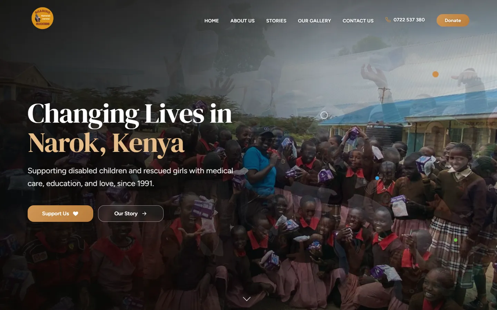
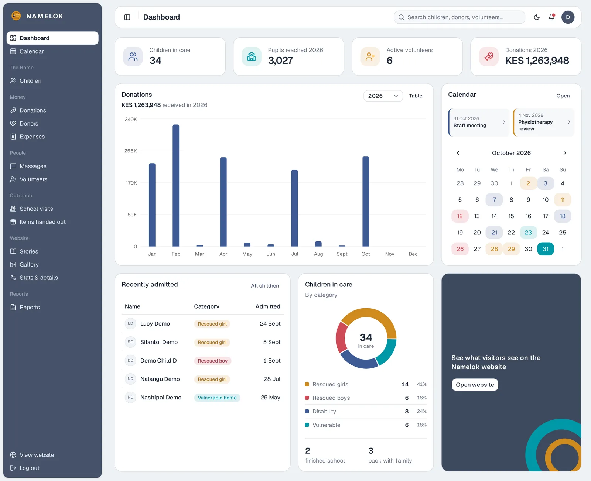
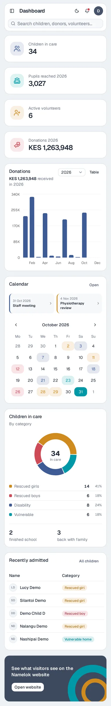

Namelok Naretoi
Website & Management System
A public website and an admin system for a children's home in Narok, Kenya, that has supported disabled children and girls rescued from FGM and early marriage since 1991.
- My role
- Design, build, database, deployment
- Client
- Namelok Naretoi Home, Narok
- Status
- Live
The Problem
The home needed two things: a website that tells its story and makes it easy to give, and one place for staff to keep track of the children in their care, donors and donations, expenses, volunteers and school outreach. The website content also had to be editable by staff without touching code.
What I Built
- Public website: home, about, stories, gallery, donate and contact pages, with a shared navbar, footer and contact section built as reusable JavaScript components.
- Admin dashboard: children (categories, classes, photos, "moved on" status), donations, donors and donor funds, expenses, messages, volunteers, school visits, items handed out, a shared calendar and reports.
- Website editor: staff manage stories, the gallery and the site's headline stats from the dashboard, and the public site reads them from the database.
- Search and sharing: page titles, a search description and social preview tags, so the home shows up clearly on Google and looks right when its link is shared on WhatsApp or Facebook.
Key Decisions
- One Supabase backend for both apps. The website and the dashboard read the same connection config and PostgreSQL database, so content edited in the dashboard shows up on the site straight away.
- Versioned database changes. The schema lives in the repo, and every change since is a dated SQL file (reports, calendar, child photos, donor funds…), so the database can be rebuilt or audited step by step.
- Static hosting, no server to maintain. The dashboard is a React + TypeScript app built with Vite into
/admin, so a single Netlify site serves the website and the dashboard. - Locked down at the database. Row Level Security means only signed-in admins can read or change records about children, donors and money, while the public website can only read published stories and site settings. An audit log records which staff member changed what.
- Privacy by default. Records about children are sensitive, so the screenshots shown here use invented sample data, never real records.
Tech Stack
The Website

The Dashboard
A records system with a content editor built in. A small team of staff keep sensitive records about the children, donors and money, and the same dashboard publishes stories and photos to the public website. The home screen is an overview: who is in care, how donations are trending and what's coming up on the calendar.


Sample data. Click a screenshot to enlarge it.